Deal with the network issue of UDP services with Clash TUN mode enabled
When the TUN mode is enable in Clash, local UDP service can’t build connection with clients on the Internet. How to diagnose it? How to fix it?
Background
I’m used to use the TUN mode of ClashX to takeover all the network traffic in my MacOS system to observe the real-time traffic and configure the traffic routing. As the open source alternative of Surge, ClashX has been my actual outbound traffic management center and outbound firewall in my MacOS system.
To manage the inbound traffic for MacOS, I still recommend the built-in PF firewall
Recently, with the popularity of the PalWorld, I set up the dedicated server in my MacOS with Docker. However, the users from Internet can not connect to my server while everything worked well in my LAN. ( I have the public IP, configured the port mapping)
Troubleshooting
Diagnose the incoming and outgoing for UDP&TCP
First, I perform diagnostics on the incoming and outgoing TCP and UDP traffic
TCP outgoing traffic, it’s easy to test and find that everything works well.
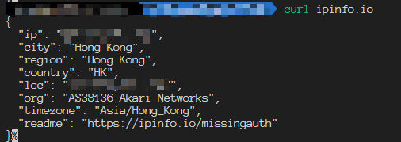
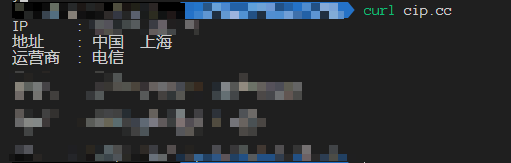
TCP incoming traffic, according to the screenshots below, the communication is normal. The packets from both client and server are received successfully.
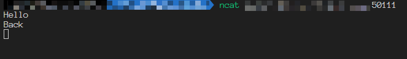
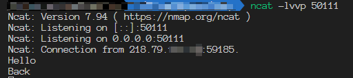
UDP outgoing traffic, here I tried to access the Google NTP service. we can find that the connection succeeded.
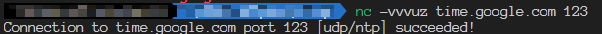
UDP ingoing traffic, let’s set up the listening service at the first.
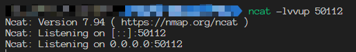
Tried to send an UDP packet, we can see the packet is received successfully. It seems like the UDP listening service works well, but really?
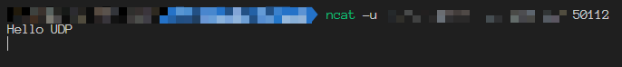
Tried to send the response packet, it can’t be received. Tried to send the packet from client side again, it can’t be received too.
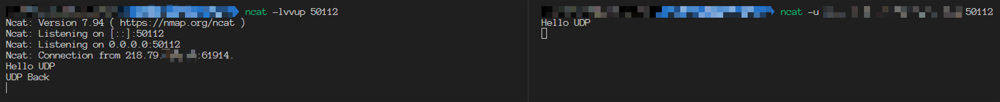
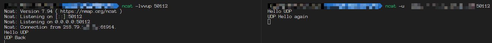
At this time, test in the LAN or without enabling on TUN mode. All connections are normal. The method is the same. So let’s skip them.
Diagnosis with Wireshark
Now we have confirm the issue, let’s dive deeper with Wireshark. While listening with Wireshark, reproduce the above problematic operation.
You may notice my public IP and ports changed, IP changed from 218.79.x.x to 117.131.x.x, the port is 50011 now. Don’t care this.
We can find the successfully sent UDP packet with destination port 50011, we received this packet in the server side successfully.
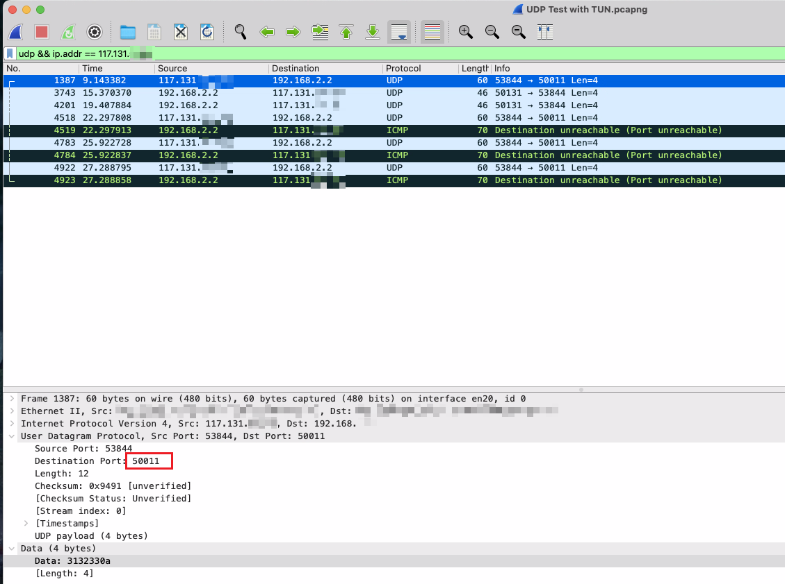
The 2nd packet is sent back from the server side, but the client side didn’t received that. We can find the source port in the screenshot, it’s 50131 which is not the same as the service listening port 50011. I believe it’s because Clash remapped the source port in the TUN NIC to avoiding conflict when several proxy clients use the same source port. Then because the source port is different from the destination port in the client side and the client was using the widely used port restricted cone NAT( called NAT in the PlayStation ), the connection failed. But if the client was using restricted cone NAT (NAT2) or full cone NAT (NAT1), I believe the connection could succeed.
Solve it
Now we have located the root cause - UDP service outgoing traffic flow through the TUN NIC, which made the source port change, so the client with NAT3 rejects the connection. How to solve it?
Solution 1 - Configure the route table manually
Since the problem is that the traffic passes through the TUN NIC, we can specify routing table rules for the specific client IP to use the physical NIC directly and ignore the TUN NIC.
In MacOS, I use the following command to indicate the traffic flowing to 117.131.x.x to use the en20 physical NIC and solved the issue successfully.
1 | sudo route add 117.131.x.x -interface en20 |
It’s also feasible to change the ClashX client to ClashX.Meta, which allows us to make more detailed configuration for the the TUN mode. Therefore, we can write the configuration file to exclude specific CIDR block automatically when enabling the TUN mode.
1 | tun: |
Cons
- This approach can’t deal with the problem when there are massive clients.
Solution 2 - Utilize port forwarding tools
Some port forwarding tools like gost can specify the listening port and send the response packet from the correspond NIC.
Here the gost bind the physical NIC (192.168.x.x) and redirect the traffic to the real service.
1 | gost -L=udp://192.168.x.x:50111/127.0.0.1:50112 |
Here we can see the packets from both client and server sides are received succesfully.
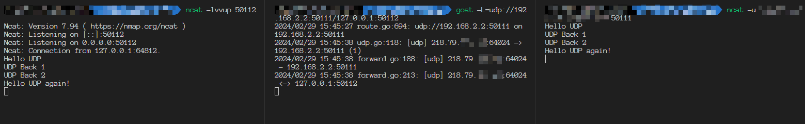
Cons
- The traffic is redirected in the application layer, which increase the server performance pressure and increase the network latency
- The server-side application can’t identify the real client IP address anymore.
Solution 3 - Bridge the NIC
Just a assumption, not tested
It’s feasible to use Vmware to create a bridged NIC which connect to the physical NIC directly to ignore the Clash TUN NIC.
Cons
- The port forwarding function in the router may not work with the bridge NIC to make the connection fail. ( I met this condition, my k662c router can’t forward a port to a IP address of a bridge NIC)
Deal with the network issue of UDP services with Clash TUN mode enabled